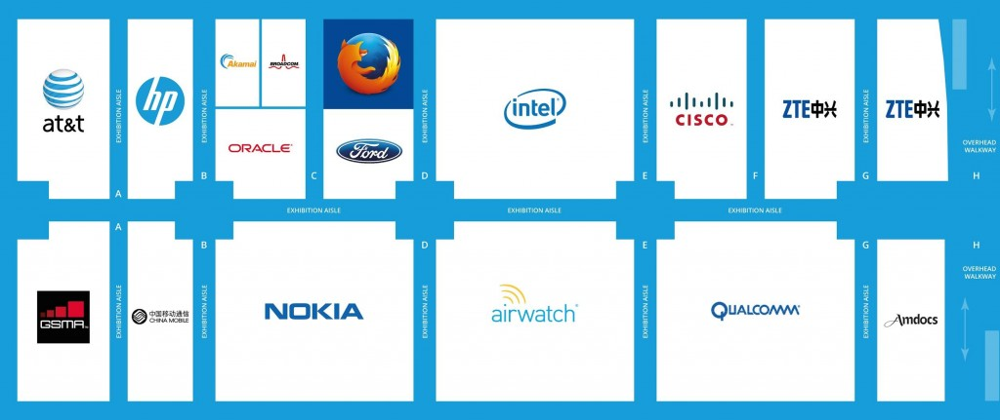

邀您搶先一睹 Firefox OS 智慧電視與手機，現場展區並將呈現 NFC 的付款機制原型。現場也有 Mozilla 講者討論隱私權的重要性，並以創新觀點描繪網路的未來。
此外，松下電器 (Panasonic) 於德國法蘭克福 (Frankfurt) 大會上，也同步發表內部搭載 Firefox OS 的新款 4K Ultra HD TV 產品線。預計於今年春季開始出貨的 Panasonic 2015 4k UHD (Ultra HD) LED VIERA TV，當然也將現身於 MWC 2015 的 Mozilla 展位上。一如去年慣例，Firefox OS 將於 Hall 3 展場的 Stand 3C30展出，展區旁即有多家主要電信營運商與裝置製造商。

Mozilla 在 MWC 2015 展位為 Hall 3 的 Stand 3C30
現場除了能看到最新款 Panasonic 智慧電視以及 Firefox OS 智慧型手機之外，今年更能 Mozilla 展區中的「Fox Den」，進一步了解 Mozilla 的創新專案。以下即為多款展示裝置的範例之一：
Mozilla 透過與德國電信 (Deutsche Telekom；DT) 的 Innovation Labs (研發中心位於矽谷與柏林)，以及波蘭 T-Mobile 的合作，為 Firefox OS 設計出 NFC 的架構與實作，並已應用於如行動付款、門禁控管、媒體分享、交通運輸服務等多個 App 之上；而行動錢包展示則涵蓋了「MasterCard® Contactless」技術並搭配多個非支付性質的功能。這些創新應用均將透過「Fox Den」讓大家了解。
請到www.firefoxos.com/mwc 觀看「Fox Den」所將進行的演講主題與議程。

Mozilla 與 Firefox OS 在 MWC 2015 (Hall 3) 的相對位置圖
已排定的議程與講者
可透過下列議程了解 Mozilla 對行動領域的趨勢分析：
「Digital Inclusion: Connecting an additional one billion people to the mobile internet」講座
Mozilla 基金會執行長Mark Surman 將說明行動連線在開發中市場的可能限制與機會，重點將放在鄉鎮地區的發展。
日期：巴塞隆納當地時間 3 月 2 日 (Mon.) 12:00 – 13:30 CET
地點：GSMA Seminar Theatre CC1.1
「Ensuring User-Centred Privacy in a Connected World」討論會
Mozilla 商業與法律事務資深副總Denelle Dixon-Thayer 將與大家探討線上世界的使用者隱私權。
日期：巴塞隆納當地時間 3 月 2 日 (Mon.) 16:00 – 17:30 CET
地點：Hall 4, Auditorium 3
「Innovation for Inclusion」主題演講
Mozilla 基金會主席兼創辦人Mitchell Baker 說明行動裝置將如何提升個人與社會。
日期：巴塞隆納當地時間 3 月 3 日 (Tue.) 11:15 – 12:45 CET
地點：Hall 4, Auditorium 1 (Main Conference Hall)
「Connected Citizens, Managing Crisis」討論會
Mozilla 基金會執行長Mark Surman 主講。在全球社群面對最迫切的人道議題上，行動技術是如何越來越關鍵的角色。
日期：巴塞隆納當地時間 3 月 3 日 (Tue.) 14:00 – 15:30 CET
地點：Hall 4, Auditorium 2
「Defining the Future of the Internet」討論會
Mozilla 首席技術長Andreas Gal 將與大家探討網際網路的未來，並引領產業領導人一同思辨網路中立性的議題。
日期：巴塞隆納當地時間 3 月 4 日 (Wed.) 15:15 – 16:15 CET
地點：Hall 4, Auditorium 5
更多資訊：
- 2015 年 3 月 2 ~ 5 日，竭誠歡迎蒞臨 Mozilla 位於 Hall 3 的 Stand 3C30 展位，邀您親身體驗 Firefox OS
- 進一步了解 Mozilla 在今年 MWC 上的相關資訊，可至：www.firefoxos.com/mwc
- 可聯繫 press@mozilla.com 排定現場會議，或索取詳細資訊
- 若需要如高解析度圖片或影片等其他資源，可至：https://blog.mozilla.org/press
原文連結：MWC 2015: Experience the Latest Firefox OS Devices, Discover what Mozilla is Working on Next